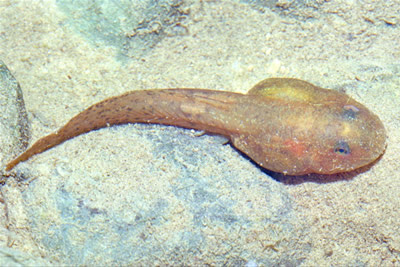

Anfíbios
Os anfíbios (do grego amphi, duas, e bios, vida) recebem essa denominação porque muitas espécies têm uma
fase larval aquática, com respiração branquial, e uma fase adulta adaptada ao ambiente terrestre. Os
anfíbios mais conhecidos são os anuros (sapos, rãs e pererecas), pertencentes na ordem Anura, termo que
significa "desprovido de cauda" (do grego an, prefixo de negação, e uros, cauda).
Outros anfíbios são os urodelos ou caudados (ordem Urodela), representados pelas salamandras, animais
dotados de quatro pernas e cauda ao longo da vida. Menos conhecidos são os ápodes ou gimnofionos (ordem Gymnophiona ou
Apoda), representados pelas cobras-cegas ou cecílias, animais de corpo cilíndrico, alongado e destituído de
apêndices.
Anuros
Sapos, rãs e pererecas formam o grupo mais conhecido de anfíbios,
caracterizados pela ausência de cauda na fase adulta.
Saiba Mais
Urodelos
Salamandras e tritões, conhecidos por suas caudas longas e habilidade de
regeneração.
Saiba Mais
Ápodes
As cecílias são anfíbios sem membros que se assemelham a cobras ou
minhocas.
Saiba Mais
Anfíbios adultos têm glândulas produtoras de muco na pele, o que ajuda a manter a superfície corporal úmida
e lubrificada. Isso permite as trocas gasosas entre os vasos sanguíneos da pele e o ambiente (respiração
cutânea). Muitos anfíbios têm pele colorida, com funções de camuflagem, atração sexual ou coloração de
alerta. Algumas espécies secretam veneno na pele, fatais para seus predadores e que podem intoxicar pessoas
ao contato.
A reprodução desses animais é dióica e, na maioria, ovípara, ou seja, ocorre por meio de ovos. A maioria dos
anuros machos vocalizam para delimitar território e atrair a fêmea, que é abraçada pelo macho, o qual
deposita os espermatozoides sobre os óvulos; enquanto isso, a fêmea libera os ovos na água.
Na maioria dos anfíbios, os ovos fecundados desenvolvem-se em larvas dotadas de brânquias. O desenvolvimento
larval encerra-se com a metamorfose, processo em que as brânquias desaparecem e surgem os pulmões. Outras
mudanças que ocorrem na metamorfose das larvas de anuros (girinos) são a regressão total da cauda e o
surgimento das pernas, primeiro as traseiras e depois as dianteiras; em larvas de salamandra a cauda não
regride na metamorfose, persistindo na fase adulta.
Metamorfose
A metamorfose dos anfíbios é um processo biológico no qual esses vertebrados passam por transformações significativas desde o estágio larval até o adulto.
Ocorrem mudanças controladas pelo hormônio tiroxina, produzido pela glândula tireoide. O eixo hipotalâmico-hipofisário regula esse processo.
Transformações incluem a
reabsorção da cauda em anuros,
o desenvolvimento de pulmões, substituindo as brânquias,
o surgimento de membros posteriores, seguido dos anteriores,
a alteração na dieta, com girinos herbívoros tornando-se adultos carnívoros em muitos casos,
a modificação do sistema circulatório para suportar respiração aérea e no caso de um anfíbio adulto, desenvolve-se adaptações para o ambiente terrestre, embora muitos permaneçam dependentes da água para reprodução. O sapo Rhinella marina, por exemplo, é altamente terrestre, mas retorna à água para depositar ovos.

Girino
Girino que representa o estágio larval dos anfíbios.
Estágios do Ciclo de Vida:
Ovo: Os anfíbios geralmente iniciam seu ciclo de vida na água, onde os ovos, ricos em vitelo, são depositados e fertilizados. Em algumas espécies ocorre em aglomerados.
Larva (no caso de anuro, girino): Após a eclosão, a larva emerge com adaptações aquáticas. No caso de anuros como Bufo bufo, os girinos apresentam cauda longa para natação, brânquias externas e dieta predominantemente herbívora, alimentando-se de algas e detritos.
Já em salamandras como Ambystoma mexicanum (axolote), as larvas possuem brânquias externas plumosas e podem manter características larvais na vida adulta.
Importância Econômica
Controle Biológico:
Anfíbios, como sapos, rãs e salamandras, se alimentam de grandes
quantidades de insetos, vetores de doenças e pragas que afetam plantações
agrícolas, como a cana de açúcar, milho e arroz. Reduzindo assim, o uso de
pesticidas gerando economias e evitando maiores danos ambientais.
Medicina:
Na pele dos anfíbios, possui compostos químicos com propriedades medicinais. Um
exemplo disso seriam os peptídeos da rã-leiteira (Phyllomedusa bicolor) que são
utilizados em pesquisa sobre possíveis drogas antimicrobianas, eficazes contra
bacterias resistentes a antibióticos.
Além disso, substâncias extraídas das peles de rãs tem potencial para tratar
doenças como a diabete tipo 2 e pressão alta, além de algumas secreções serem 200
vezes mais eficazes que a morfina por exemplo, sem os efeitos colaterais.

Phyllomedusa bicolor
A exploração medicinal dos anfíbios esta avaliada em bilhões de dólares no
mercado farmacêutico global.
Importância Cultural
Mitologia e Simbolismo:
Na amazônia, sapos e rãs são considerados guardiões espirituais ou
simbolos de cura/purificação.
No egito antigo, a Deusa Heqet, representada como uma rã, era associada à
fertilidade. Por outro lado, a infestação de rãs foi umas das 10 pragas do egito, que
traz um sentido negativo às rãs.
Importância Ecológica
Preservação de Ecossistemas
Girinos promovem qualidade da água ao consumir algas em excesso,
prevenindo assim a eutrofização (Excesso de nutrientes, o mesmo causa a
proliferação de algas, que por consequência ocorre a escassez de oxigênio, devido
a impossibilidade de troca gasosa entre o meio aquático e a atmosfera).
Bioindicadores Ambientais
Devido a permeabilidade da sua pele, os anfíbios sao extremamente
sensiveis a mudanças químicas no ambiente, como poluentes agrícolas (pesticida), produtos químicos
industriais, metais pesados, entre outros.
Portanto quando ocorre um declínio da populacao de anfibios do local,
frequentemente é o primeiro sinal de poluiçao ou desequilíbrio ecológico.
Eutrofização
A eutrofização é o excesso de nutrientes na água, causando proliferação de
algas e redução de oxigênio.